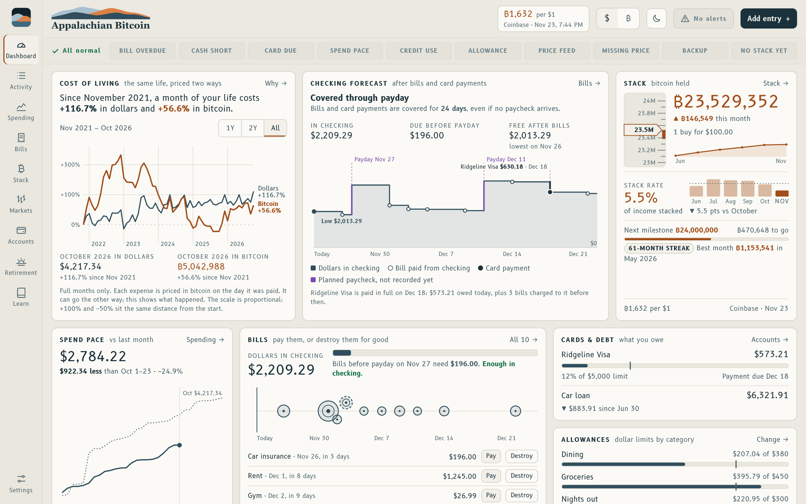
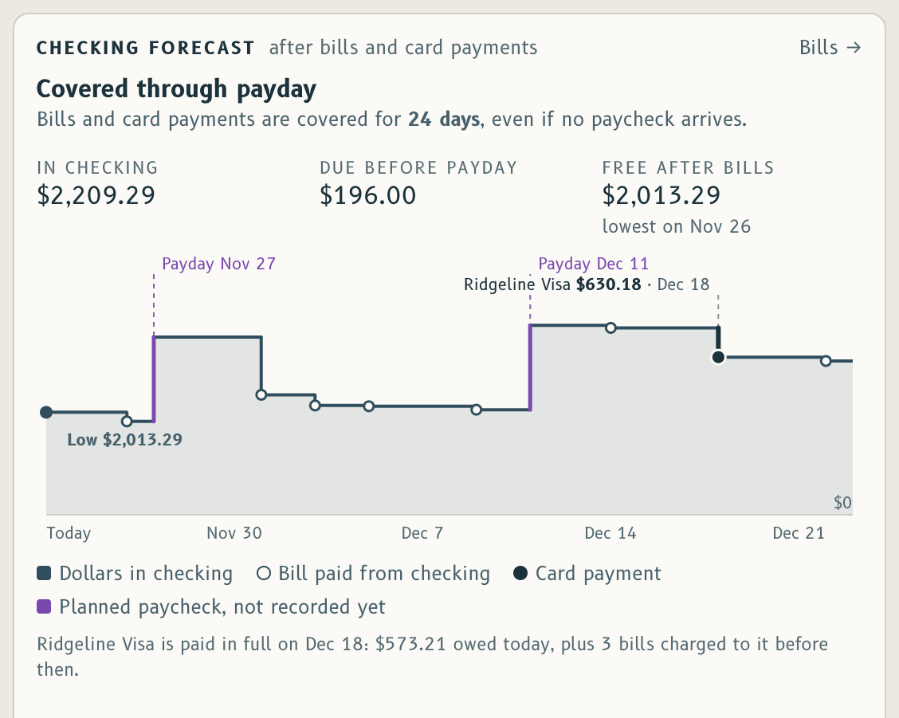
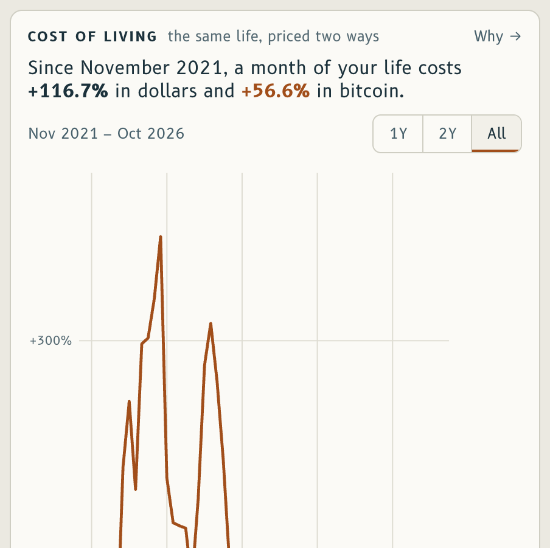

Proverbs 21:20
Appalachian Bitcoin is a personal finance manager that runs on your own computer. Input your paychecks, bills and everyday spending, so you can analyze what’s actually happening and make wise decisions. Easily toggle between using dollars as a measuring stick or bitcoin.
The demo is a made-up person’s money. No sign-up, and nothing is saved. The software is free; installing it takes a few steps today.

Money trouble rarely arrives all at once. A bill falls due a few days before payday. A card balance creeps up. One month runs a little ahead of the last.
The app puts your checking balance, your bills and your paydays on one line, thirty days ahead, so a tight week shows up while there is still time to do something about it. It is much easier to fix a small problem than a large one.

You live in dollars: paychecks, rent, groceries, the card bill. The app tracks all of it to the cent.
If you buy bitcoin, the app treats that as your saving. It also records what every expense would have cost in bitcoin on the day you paid, using that day’s price. One switch changes the measuring stick, and you can look at the same life priced both ways, month by month and year by year.
Bitcoin’s price moves in both directions, sometimes for years. The app shows what happened, and it never fills in a price it does not have. Only the Retirement screen looks ahead at bitcoin’s price, at a growth rate you choose yourself.

You can begin with one account and a handful of entries. A fourteen-year-old with no bills can track what comes in and what goes out, and keep going for years.
When your life gets more complicated, the app has room for it: recurring bills, a credit card, a paycheck schedule, a loan, dollar limits for the spending you can steer. It is detailed and exact, and it rewards the time you put into it.
Appalachian Bitcoin runs on your own computer. Your records stay on that computer. It is free, and the source code is open for anyone to read.
On a Mac, it is an app you download and open. A Windows app is next; until then, the guide shows how to run it on Windows.